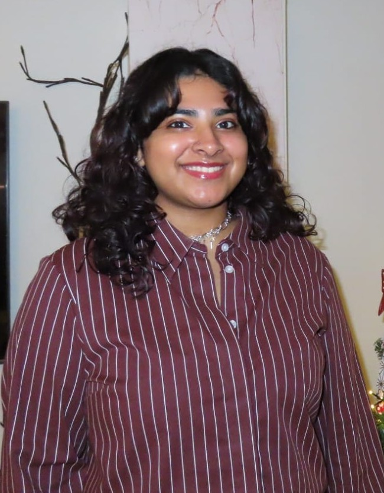

‹ Back
About me

Hello, my name is Alicia Fernandes and I am excited to share with you my journey as a Full-Stack Developer. “Curiouser and curiouser!” I have always been passionate about technology and its ability to change the world. My journey began in 2019 when I enrolled in a Software Developer program. During this time, I discovered my love for coding and the joy of creating something from scratch. Since then, I have been on a mission to find new and innovative ways to develop better software.
In 2022, I graduated from ROC MBO Almere Buiten, where I had the opportunity to work on several exciting projects. One of my favorites was a web application that helped small business owners manage their inventory more efficiently. “It's no use going back to yesterday, because I was a different person then.” This project taught me the importance of listening to the needs of the end-users and how to deliver a product that meets their needs.
Currently, I am studying HBO-ICT at Windesheim Almere, where I am expanding my knowledge of software development and learning new skills. “We’re all mad here.” In my free time, I love to listen to music, and I find inspiration in the beauty of photography. I also enjoy traveling and discovering new cultures. “The only way to achieve the impossible is to believe it is possible.”